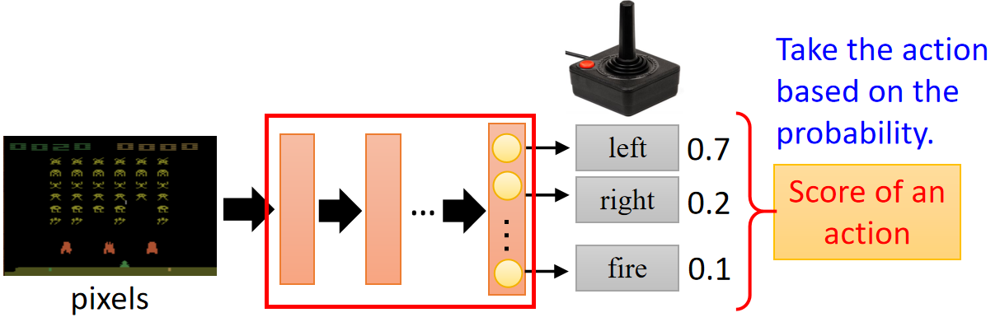
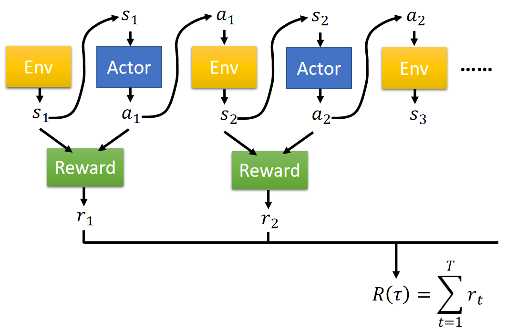
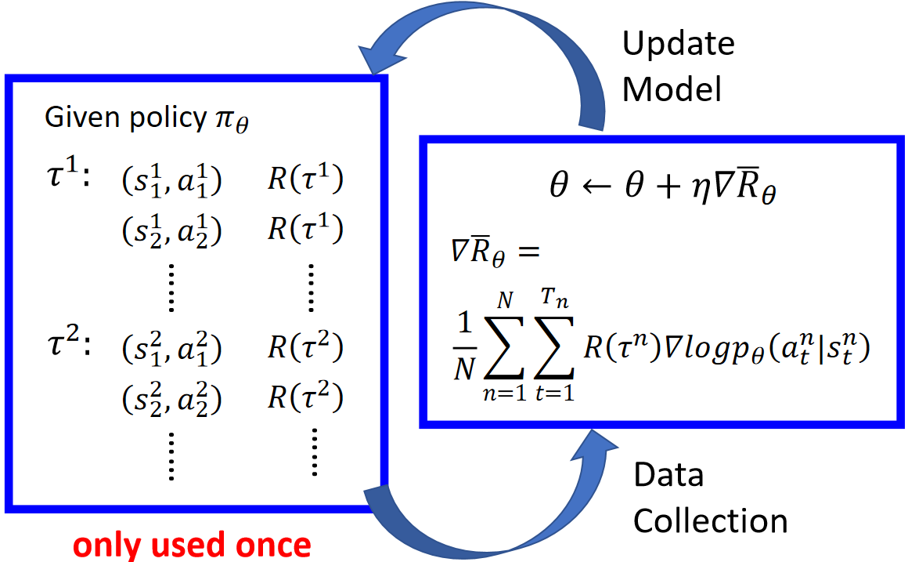
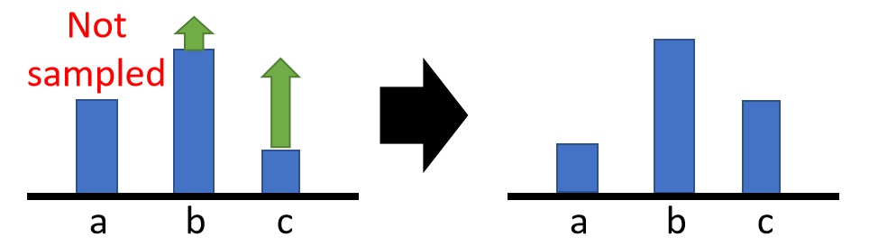

Basic Components In Policy Gradient
对于一个智能体，我们对其进行Policy Gradient的RL。
在介绍Policy Gradient之前，引出其中涉及的几个组成部分：
-
无法更改部分：
- Environment：智能体与之交互的环境；
- Reward Function：奖励函数决定了智能体采取动作所获得的反馈。
-
待训练部分：
我们将Actor的决策建模为一个Policy Of Actor，模型用π表示，其参数为θ。这个Policy能够给定一个当前状态的观测值(state)，输出一个最有可能采取的动作(action)。例如下图中，给定一个游戏画面的观测值，输出下一步要进行的操作。

问题阐述
那根据上述的组件，我们如何建模这个智能体在环境中的强化学习问题呢？
对于某个时刻t来说，Actor根据Environment当前的观测值 \ 状态 st，得到action空间中不同action的概率，根据这些概率采样一个action at执行，而后Environment进入下一个观测状态值，重复这个交互过程，直到达到轮次上限T。大致过程如下图所示：
我们将这过程中产生的所有st,at数据收集在一起，称为一个Trajectory：
Trajectoryτ=s1,a1,s2,a2,...,sT,aT
给定一个初始观测状态s1，一个Actor通过其Policy决策得到某个τ的概率可建模为：
pθ(τ)=p(s1)pθ(a1∣s1)p(s2∣s1,a1)pθ(a2∣s2)p(s3∣s2,a2)⋯=p(s1)t=1∏Tpθ(at∣st)p(st+1∣st,at)
在Actor基于某个状态st采取了某个action at后，可以由reward function得到此时的即时奖励rt，具体如下图所示，那么Trajectory τ的总奖励可以计算为：R(τ)=∑t=1Trt。

由于action是根据概率采样得到的；而给定Environment一个action，其下一个state的产生可能也会产生随机性。因此对于一个参数为θ的Policy而言，其产生的Trajectory是随机的，Rθ其实也是一个随机变量。因此，我们只对其期望进行建模：
Rˉθ=τ∑R(τ)pθ(τ)=Eτ∼pθ(τ)[R(τ)]
上述的Rˉθ便是我们需要最大化的目标。
Policy Gradient
得到了优化目标：Rˉθ=∑τR(τ)pθ(τ)后，我们如何进行参数更新呢？
一个直观的方法是进行梯度下降，因此我们需要计算优化目标的梯度：∇Rˉθ=∑τR(τ)∇pθ(τ)=∑τR(τ)pθ(τ)pθ(τ)∇pθ(τ)。
可以看到，在训练过程中，R(τ)与参数待更新θ无关，我们不需要对其进行微分计算，因此R(τ)的计算可以只是一个黑盒。
进一步推导，可以得到：
=τ∑R(τ)pθ(τ)∇logpθ(τ)
实际训练中，一般都是根据训练样本进行期望计算，例如训练样本中，因此可以继续推导为：
=Eτ∼pθ(τ)[R(τ)∇logpθ(τ)]≈N1n=1∑NR(τn)∇logpθ(τn)
=N1n=1∑Nt=1∑TnR(τn)∇logpθ(atn∣stn)
其中，Trajectory τn是训练样本中的第n条Trajectory，Policyθ的大致更新流程如下图所示：

最后，Policy Gradient方法的梯度更新则可以总结为：
θ←θ+η∇Rˉθ
∇Rˉθ=N1n=1∑Nt=1∑TnR(τn)∇logpθ(atn∣stn)
一些Trick
Add A Baseline
前文可知，Policy Gradient的优化梯度为：
∇Rˉθ=N1n=1∑Nt=1∑TnR(τn)∇logpθ(atn∣stn)
那么我们可以很直观地知道，这个优化梯度反映的是，当Policy基于state st选取某个action at时，如果R(τ)是正的reward，那么则增大这一项的几率，反之则减小这一项的几率。
但是，在有一些情况下，R(τ)也是有可能不是正负兼顾，而是一直为正，且量有大有小，比如打游戏，击败一个敌人和n个敌人都是正向的，只是数量不一样。在这种条件下，如果是理想情况，训练样本中能够采样到所有的action，那么也不会产生什么问题。例如一个action空间中有a、b、c三种action，如下图所示，由于三种action出现的概率相加为1，那么即使他们都被正值的R(τ)加权，他们的概率也不会同时上升，而是R(τ)相对值更大的那个action概率变大。相对值较小的则下降。
但是，如果在训练样本中我们只采样了action b和 action c的样本会出现什么问题呢？
这时候，因为R(τ)全部为正值，模型看到了action b和action c能够带来正收益，就会“把a的采样可能性向b和c转移”，那么此时action a出现的概率就会减小，而后则产生蝴蝶效应，采样到action a的情况就变得更为困难，如下图所示。如果action a对于模型来说是一个比较好的action，这种梯度计算方式显然是有问题的。

如何解决这个问题呢？我们可以为R(τ)引入一个“baseline” b：
∇Rˉθ=N1n=1∑Nt=1∑Tn(R(τn)−b)∇logpθ(atn∣stn)
这样即使是R(τ)全部为正值的情况下，如果R(τ)没有满足b的门槛，R(τn)−b为负，证明这个action还不够好，将其概率降低，为其他好action的采样“让出道路”。
Assign Suitable Credit
在梯度计算式中：
∇Rˉθ=N1n=1∑Nt=1∑Tn(R(τn)−b)∇logpθ(atn∣stn)
我们可以看到，在某一个stn给出一个atn这个行为是被R(τn)−b加权的，也就是说处于一个Trajectory中的数据都是被同一个值加权的，